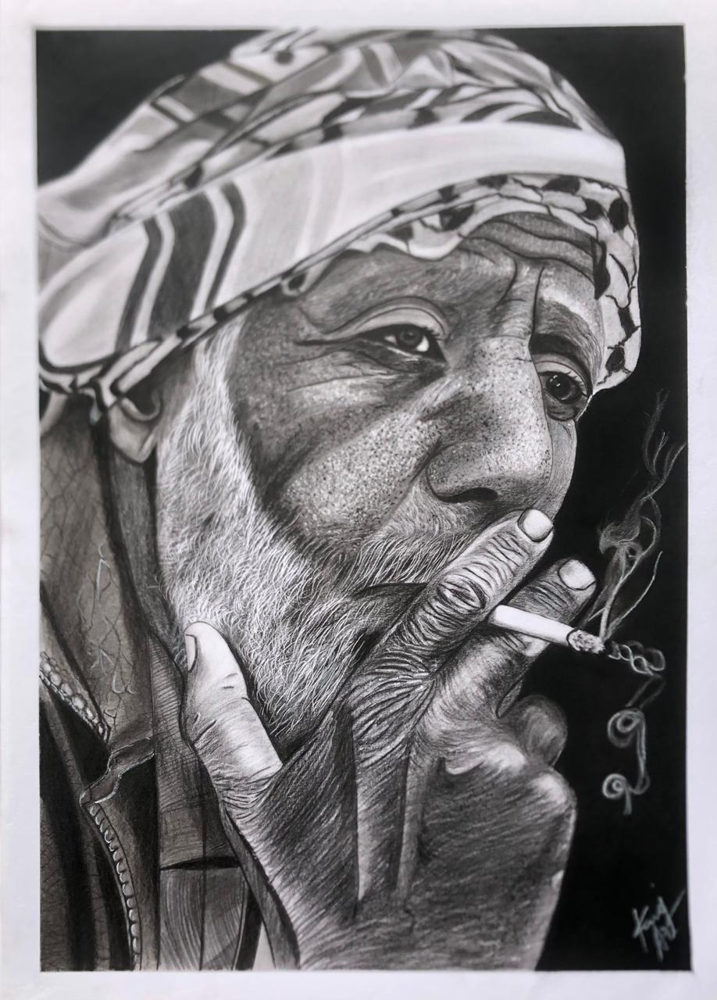
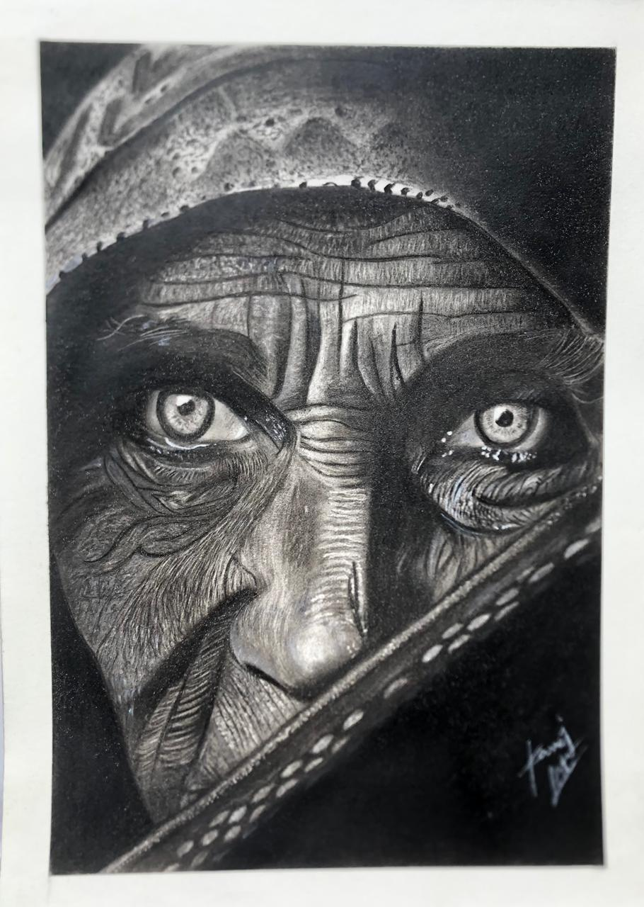
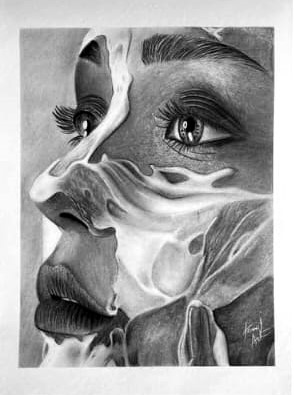
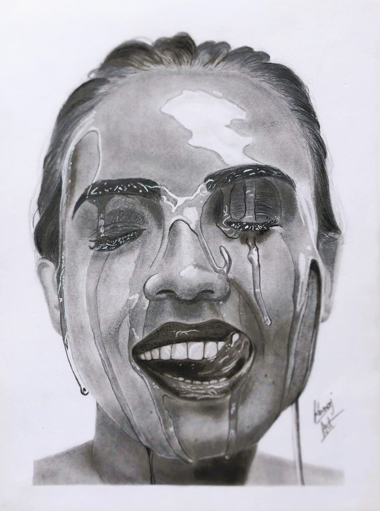
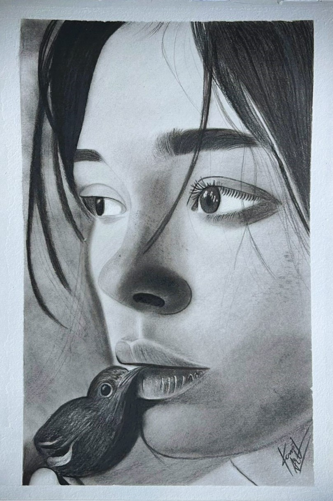
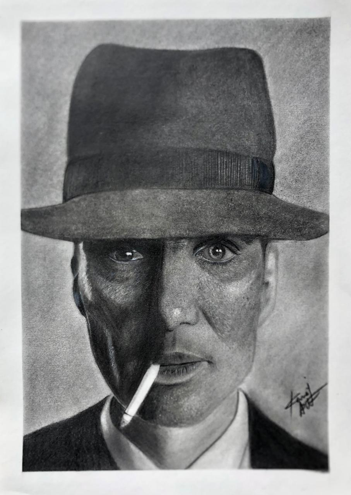
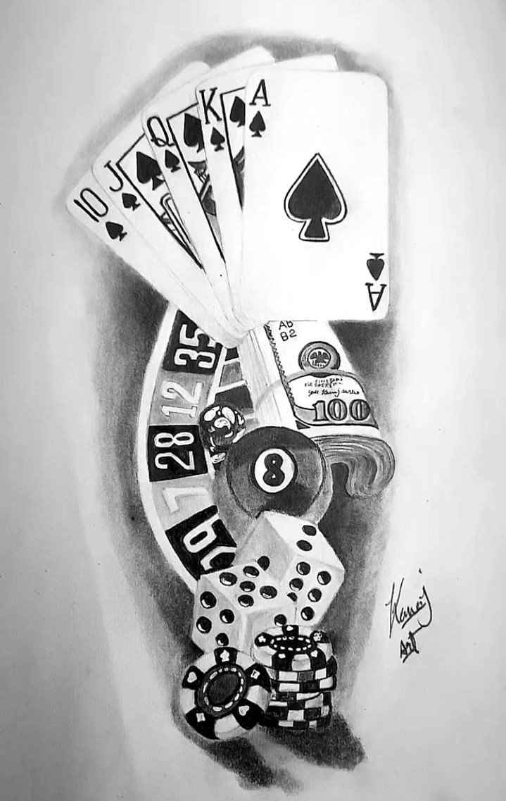
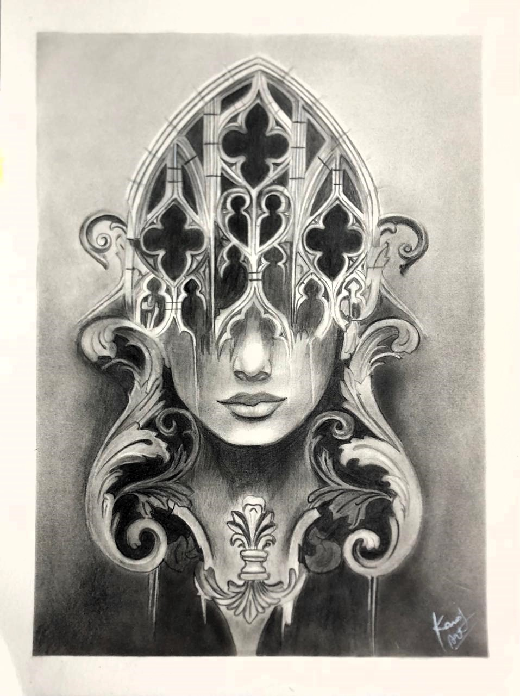
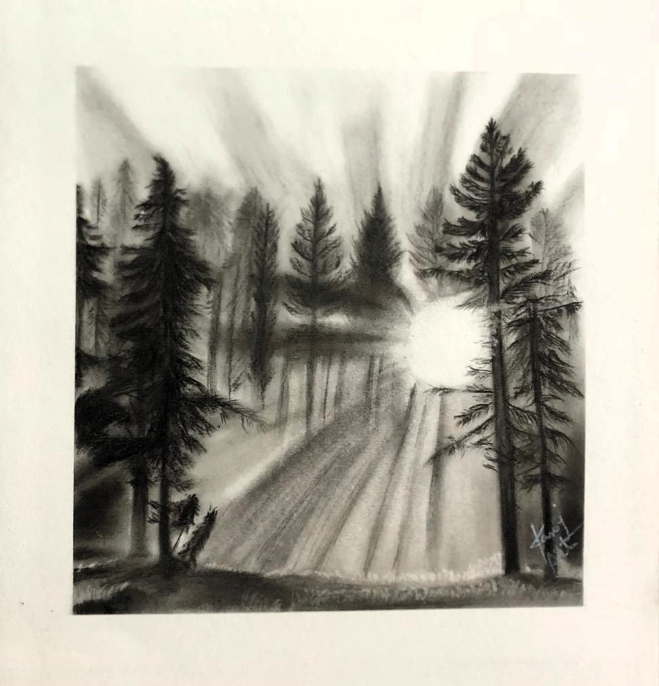

Art Shop

“Elderly Man Smoking" Realistic Portrait
Realistic pencil portrait of elderly man smoking, rich expressive detail.

"Piercing Eyes" Realistic Charcoal Portrait
Detailed pencil portrait of veiled elderly figure with piercing eyes.

“Fluid Dreams" Artistic Pencil Portrait
Artistic pencil portrait of a woman’s face blending with flowing textures.

“Liquid Joy" Artistic Pencil Portrait
Artistic pencil portrait of woman’s joyful face melting into liquid textures.

"Whisper of Nature" Artistic Pencil Portrait
Artistic pencil portrait of girl with bird touching her lips.

“Shadows & Smoke" Cillian Murphy Portrait”
Cillian Murphy's pencil portrait in hat with cigarette, from Oppenheimer.

The Gambler's Luck
This stunning piece of art combines the thrilling elements of gambling into one detailed, beautiful design.

The Hidden Face
A mesmerizing portrait where ornate gothic patterns serve as a mask of beauty and mystery.

Forest Dawn
A serene sketch of dramatic light rays shining through a forest.